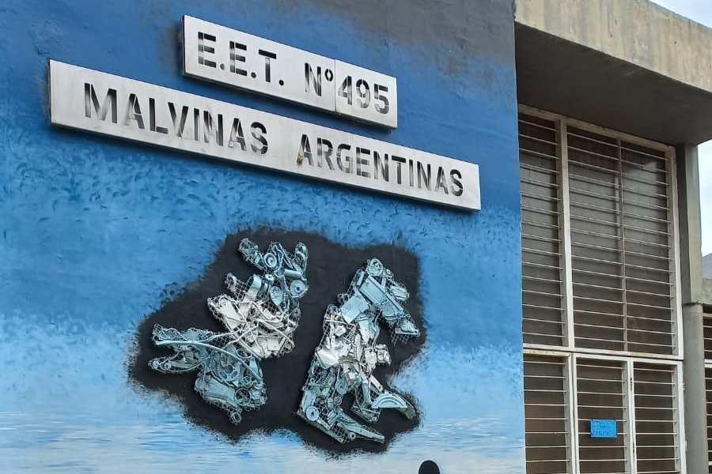

Educación Técnica
Formación técnica de calidad con una sólida base teórica y práctica.
Rafaela · Santa Fe · Argentina
Educación técnica, innovación, compromiso y excelencia al servicio de la comunidad.
Conocé la escuela
Desde 2005, la E.E.T.P. N.º 495 forma técnicos con compromiso, innovación y una fuerte vinculación con la comunidad de Rafaela y la región.
La Escuela de Educación Técnico Profesional N° 495 "Malvinas Argentinas" nació el 2 de mayo de 2005 como anexo de la E.E.T. N° 460, con el propósito de ampliar la oferta de educación técnica en la ciudad de Rafaela y brindar una nueva oportunidad de formación a los jóvenes de la comunidad. Desde sus comienzos, la institución asumió el desafío de construir una identidad propia, basada en la calidad educativa, el compromiso y el trabajo colaborativo.
Los primeros años estuvieron marcados por el esfuerzo de docentes, estudiantes, familias y colaboradores que, aun con recursos limitados y en espacios adaptados, hicieron posible el crecimiento de la escuela. Se impulsaron proyectos científicos y tecnológicos, se fortalecieron los talleres, se incorporó equipamiento, se promovió la participación en ferias y actividades educativas y se consolidó una comunidad comprometida con la formación técnica y humana de sus estudiantes.
En 2008 obtuvo oficialmente el nombre de Escuela de Educación Técnico Profesional N° 495 "Malvinas Argentinas", iniciando una nueva etapa de crecimiento y desarrollo. Finalmente, el 12 de marzo de 2013 quedó inaugurado el edificio actual, un logro histórico que representa el esfuerzo, la perseverancia y el compromiso de toda la comunidad educativa, valores que continúan guiando el presente y el futuro de nuestra escuela.
Formación técnica de calidad con una sólida base teórica y práctica.
Aprendizaje en talleres equipados que acercan a los estudiantes al mundo laboral.
Una institución comprometida con el trabajo colaborativo, los valores y la inclusión.
Preparación para continuar estudios superiores o incorporarse al ámbito profesional.
Una formación técnica que combina conocimientos, prácticas profesionalizantes y preparación para el mundo laboral y los estudios superiores.
La Tecnicatura en Informática Profesional y Personal prepara a los estudiantes para desenvolverse en un ámbito tecnológico en permanente evolución, integrando conocimientos teóricos con una sólida formación práctica en talleres y laboratorios.
A lo largo de la carrera se desarrollan capacidades relacionadas con hardware, software, programación, redes, bases de datos, sistemas operativos, seguridad informática y prácticas profesionalizantes, permitiendo afrontar situaciones reales del ámbito laboral y continuar estudios superiores.
Instala, configura y mantiene computadoras y dispositivos informáticos.
Implementa, administra y optimiza redes de datos y conectividad.
Desarrolla soluciones informáticas utilizando diferentes lenguajes y herramientas.
Diagnostica y resuelve problemas de hardware y software.
Protege equipos, sistemas e información aplicando buenas prácticas.
Brinda asistencia técnica y asesora a usuarios e instituciones.
La formación se desarrolla a lo largo de seis años. Durante los dos primeros se prioriza la formación general junto a los talleres. Desde tercer año comienza la formación técnica específica de la Tecnicatura en Informática Profesional y Personal.
Historia, identidad institucional, autoridades e instalaciones.
Ver másInformación sobre la tecnicatura y el perfil profesional del egresado.
Ver másNoticias, eventos, proyectos y comunicados institucionales.
Ver másDirección, teléfono, correo electrónico y medios de contacto.
Ver más